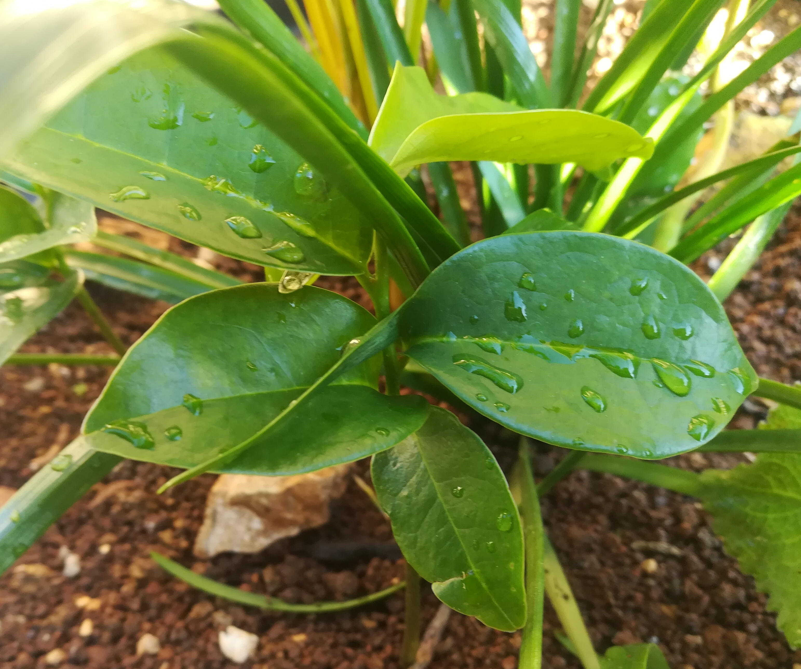
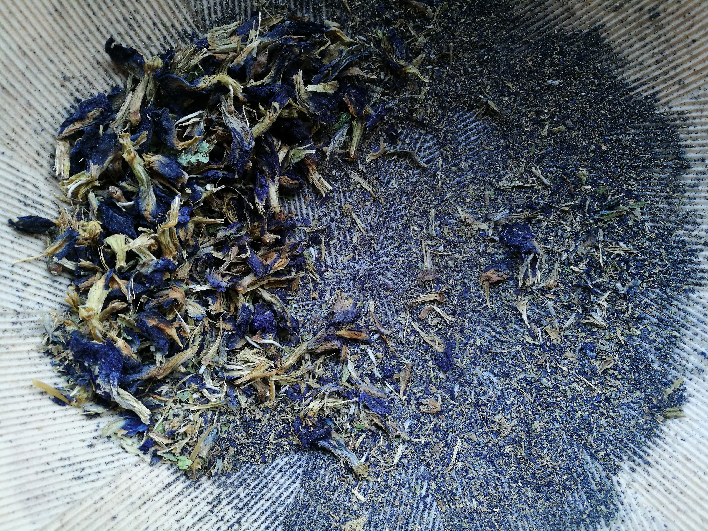

Mountain Sop
An infusion of the leaves have some pain-relieving qualities for pregnant women.
Blue-pea flower
The earthy flavour of butterfly-pea flower tea is said to be a mood enhancer.
Bissy
Good for poisoning, fever, diarrhea and it also relieves inflammation .

Blood Wist Root
To be drank for energy and stamina, good for cold and flu. Not recommended for persons with high blood pressure.

Cashew tree bark
Used as a mouthwash for treating oral ulcers and as a remedy for sore throats and influenza.

Collic Mint
It is an excellent remedy for reducing symptoms related to digestion.

Comfrey
Used to treat and alleviate arthritis, thromobophlebitis, gout and bronchial congestion.

Cow Foot
Treats migraines and soothes aching joints.

Cinnamon
Used as an anti-inflamatory.
Cerasee
The leaves and stem are usually boiled or drawn into a tea and taken for a number of ailments including hypertension, diabetes, parasitic worms, abdominal pains, and purging/detoxing the body and blood.

Manju Bitters
Improves protein digestion and mineral absorption.

Neem
Neem leaf is used for leprosy, eye disorders, bloody nose, intestinal worms and stomach upset.

Rosemary
Alleviates muscle pain and improves memory.

Fever Grass
Relives anxiety and relieves pain.

Gross Stake
Used as a cold and flu treatment.

Guco Bush
Used for the treatment of stomach aches.

Jack any Bush
Used as a cold and flu treatment.

Joseph Coat
Remedy for pain, infections and common cold.

Medina
Used as an aphrodisiac and remedy for common cold.

Moringa
Excellent source of vitamins. Helps to lower blood pressure levels and inflamation.

NaseBerry tree leaf
Naseberry is a great immune booster.

Noni Fruit
noni fruits for thousands of years to help treat a variety of health problems such as diabetes, high blood pressure, aches, pains, burns and arthritis.

Oilnut Tree
The seed from the fruit can boiled and oil extract Castrol oil .

Old Man Beard
used for weight loss, pain relief, fever control, and wound healing.

Orange Peel
Used for high cholesterol, high blood pressure, and stroke prevention.

Palm(unspecified)
Good for HIV, can be drunk as tea as a remedy Can be eaten.

Red Water Grass
Relives anxiety and prevents infection.

Sarsaparilla
Potent anti-inflamatory used by arthritis, psoriasis and cancer patients.

Shoe Black(Hibiscus Plant)
Hibiscus tea is used to lower body temperature, treat heart and nerve diseases, and as a diuretic to increase urine production.

Snake Wist
Used the treatment of cold and flu.

Sour Sop Leaf
Treats stomach ailments, fever, parasitic infections, hypertension and rheumatism.

Snake Wist
Treats inflamation.
Spanish Needle
It may be used to treat diabetes, colds, flu, bronchitis, hepatitis, colic, asthma and menstrual conditions..

Susumba
Used for the treatment of cold.

Vervine
To be drunk as tea as a remedy for pain.

Ackee Leaf
Used by diabetics patients(Tea).

Aloe Vera
Good for skin and hair.

Arrowroot
Helps with weight loss. Can be used to create.